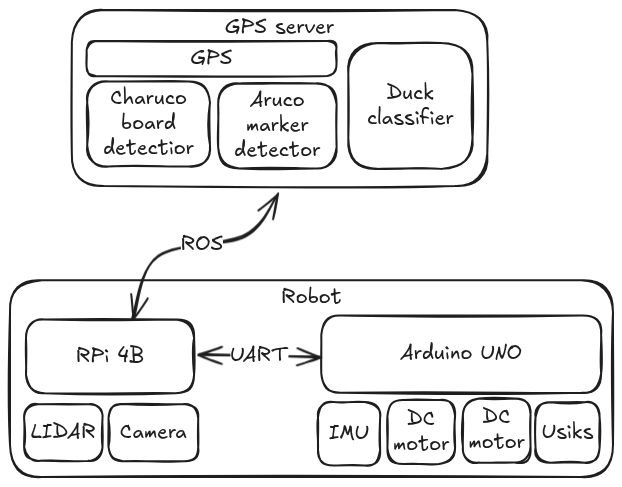

nedoROS
О проекте
Общая схема системы
Аппаратная часть
Код низкого уровня
Код навигации и принятия решений
Видеозрение и классификация уточек
nedoROS
О проекте
Документация ROS2 робота команды nedoROS
Общая схема системы

Next »